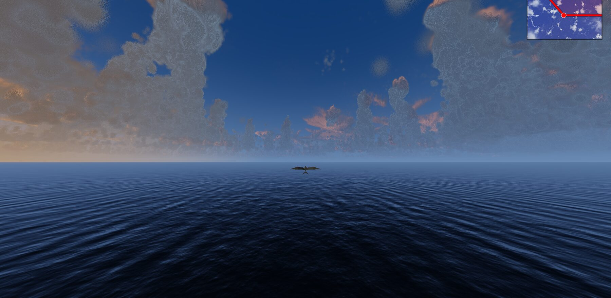

Thomas DeWitt / Thought Cloud / Soar
Soar.
A real cloud field, rendered the way light moves through it — live, in this tab.
checking browser
02

Beneath the anvil17.4 km
03

Fly the demo
TWP-ICE, Darwin 2006 · 13 MB — or drop your own netCDF anywhere
WASD · space/shift · scroll · esc
Shallow cumulus2.1 km
04

Last lightsun 3°
05

Towers25 km out